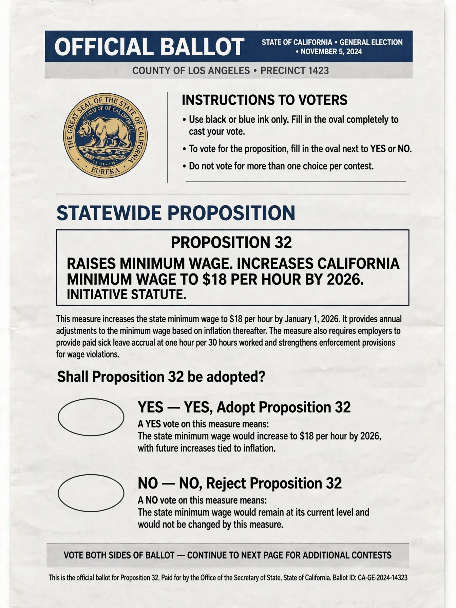

A proposition is a proposal or statement offered for consideration. The term is used in several distinct senses in philosophy, law, politics and everyday language.
In philosophy and logic, a proposition is the meaning of a declarative sentence — that which can be true or false. The sentences "Snow is white" and "La neige est blanche" express the same proposition, though the sentences differ. Propositions are the primary bearers of truth values and the objects of attitudes such as belief and doubt.
In the politics of several United States states, particularly California, a proposition is a measure placed on the ballot for a direct vote by the electorate, whether by the legislature or through the initiative process. Famous examples include California Proposition 13 (1978), which limited property taxes. In parliamentary usage, a proposition may also refer to a motion put before an assembly for debate.
In legal drafting, a proposition of law is a statement of a legal rule offered as a basis for argument. In business and negotiation, a proposition (or value proposition) is a statement of the value a product or deal offers.